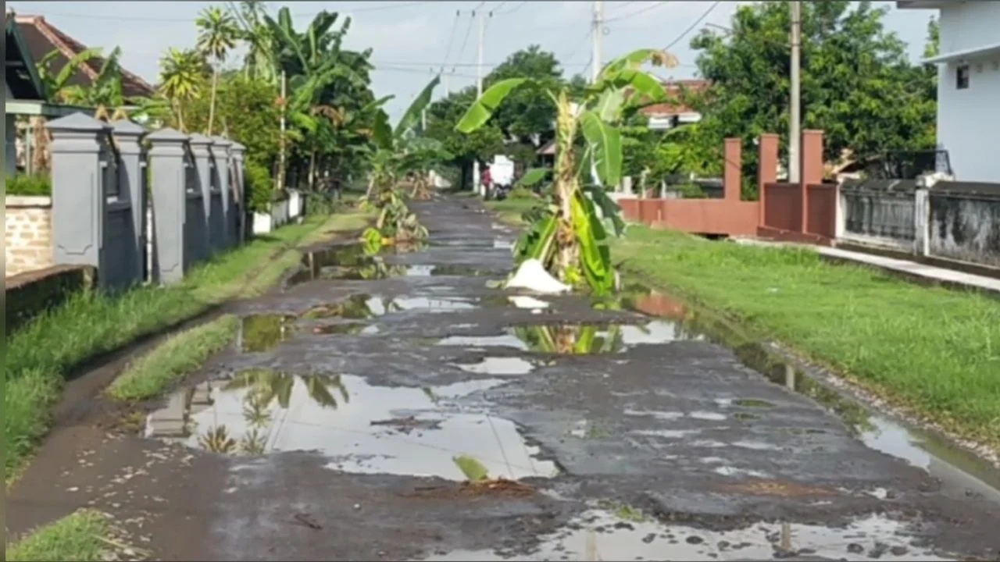
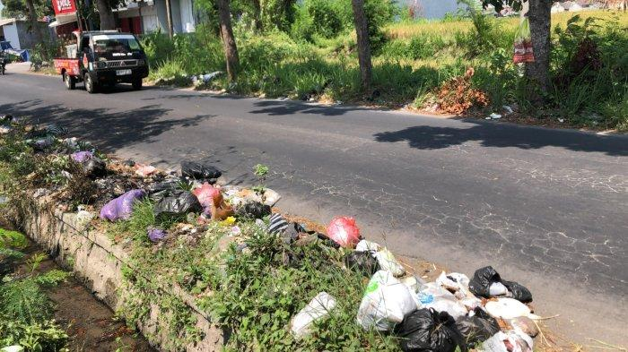
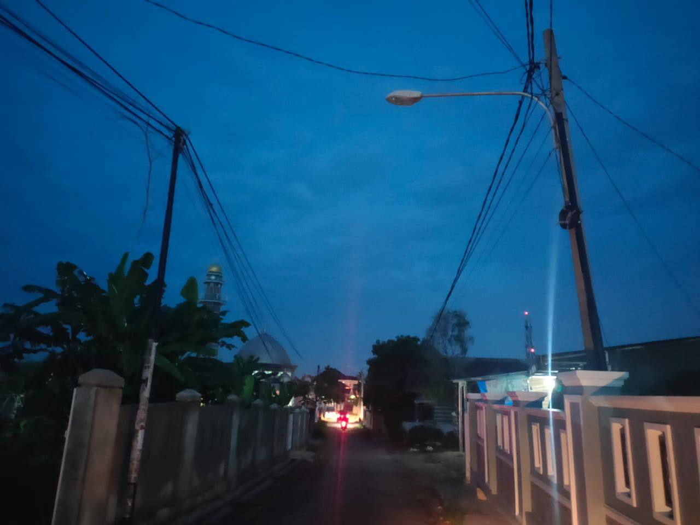
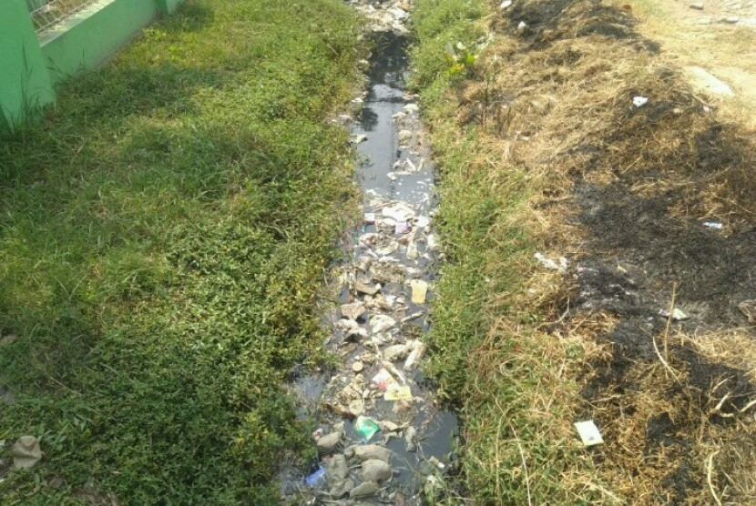

Jalan Berlubang
Jl. Kemanggisan Utama, Palmerah
2 Jam yang lalu
Terdapat lubang cukup besar di tengah jalan yang membahayakan pengendara.
⏳ DiprosesBersama kita wujudkan lingkungan yang lebih bersih, sehat, dan nyaman.

Jl. Kemanggisan Utama, Palmerah
2 Jam yang lalu
Terdapat lubang cukup besar di tengah jalan yang membahayakan pengendara.
⏳ Diproses
Jl. Anggrek No.7, Slipi
5 Jam yang lalu
Sampah menumpuk di pinggir jalan sudah beberapa hari dan menimbulkan bau.
⏳ Diproses
Jl. Panjang, Kebon Jeruk
8 Jam yang lalu
Lampu jalan di depan komplek tidak menyala sejak malam kemarin.
✅ Selesai
Jl. Rawa Belong, Palmerah
12 Jam yang lalu
Selokan tersumbat oleh sampah dan daun kering sehingga air meluap.
⏰ Menunggu